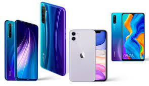
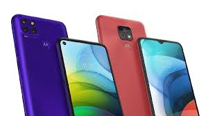
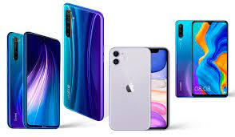
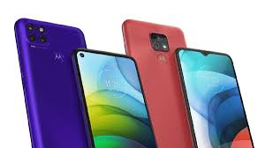

Pagina de Celulares
La tecnología móvil comienza a desarrollarse a partir de mediados del siglo XX. Básicamente consiste en un conjunto de antenas con la capacidad de recibir y enviar señales de radio, antenas que forman una red. Esta tecnología permite la comunicación entre celulares como asimismo con teléfonos fijos. Dadas las ventajas que este tipo de telefonía tenía, los países desarrollados comenzaron a implementarla con cierto éxito. Al principio su uso estaba limitado a individuos que tenían una necesidad muy específica, pero con el paso del tiempo se popularizó hasta alcanzar a la mayoría de la población. Ciertamente, hoy en día nos resultaría difícil vivir sin esta tecnología.
DESCRIPCIÓN DE LA TIENDA
PRODUCTOS
· Teléfonos móviles en variedad de modelos y marcas
· Apertura y liberación de bandas
· Venta de accesorios telefónicos
· Instalación de cabinas telefónicas
· Venta de pacs y bases para el hogar
· Accesorios informáticos
· Impresión y copias
 


